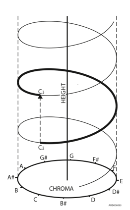
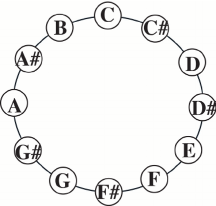

What is it?
In 1964 Roger Shepard created a small series of tones which, when listened to on repeat, are heard to be endlessly increasing in pitch.
This is impossible! Similarly, when played in reverse the series is heard to be endlessly descending.
How does this work?
Shepard first demonstrated his famous illusion by creating a set of complex tones - these are tones made up of multiple frequencies, or multiple sound waves.
Each tone consisted of ten frequency components spaced octaves apart, analogous to the sound produced by playing all the C keys on a piano in synchrony.
Thus, a trained musician may be able to hear multiple notes within the single tone.
The amplitudes of each frequency component within a tone were fixed according to the bell-shaped curve above. Here, all the black lines comprise one tone. As shown, the highest and lowest octave-spaced components were quieter than those in the middle.
The dashed lines represent all the frequency components comprising the next tone in the series; the musical analogy here would be playing all the D keys on a piano simultaneously. Shepard created all his tones as such.
Since Shepard’s work many other researchers and composers have found alternative ways to recreate this illusion.
Read about Diana Deutsch’s work using harmonics here.
We created the illusion by layering three sequences of tones; the sequences start from the same note and rise in pitch, but again differ by one octave.
The higher octave sequence fades from 100% volume to 0%. The lower octave rises from 0% to 100% volume and the middle sequence is constant at 100% volume.
You always hear two sequences with a pitch difference. Your brain uses one as a reference and, from the other, infers that the pitch is rising.
The fading volumes means you do not register the sequences beginning or ending. Your brain links tones on the basis of proximity and believes there is a forever ascending scale.
Is it used anywhere?
Shepard scales can be found in music and a variety of sound effects. It is used for the Batpod in the Dark Knight as well as to create extreme tension in the film Dunkirk.
Other notable examples can be found in the stairs in Super Mario and in Pink Floyd’s song Echoes.
What does this suggest about pitch?
Pitch is generally understood to be how ‘high’ or ‘low’ a sound seems and is linked to frequency.
Original models of pitch imagined a positive linear relationship to frequency; increase the frequency of a sound wave and it will be heard as a higher pitch.
However, the Shepard illusion evidences pitch has two characteristics; pitch height and pitch chroma.
If we model frequency on a helix, where traversing up the helix corresponds to an increase in frequency, the height of any point represents the pitch height and the angle of the point around the circle represents the pitch chroma.

What does this tell us about human hearing?
Shepard’s research highlighted that most people tend to make judgements about pitch based on what he called ‘the proximity principle’.
See below the pitch class (or chroma) circle.
Listeners typically interpret a note as increasing in pitch if its most direct linkage to the note heard prior is made clockwise around this circle, and vice versa if anticlockwise.
